Chords-Python#
Ringkasan#
Chords-Python adalah sekumpulan alat sumber terbuka untuk merekam sinyal bio-potensial seperti ECG, EMG, EEG, atau EOG, bersama dengan visualisasi menggunakan perangkat keras BioAmp. Ini ideal untuk tujuan pendidikan karena mempromosikan Neurosains DIY dan membuat eksplorasi sinyal bio-potensial lebih mudah diakses untuk siswa dan peneliti.
Fitur#
Persyaratan Perangkat Lunak#
Arduino IDE – Diperlukan untuk mengunggah firmware Chords Arduino ke papan pengembangan Anda.
Python – Pastikan Anda memiliki versi terbaru yang terinstal.
VS Code atau editor kode lainnya (Sebagai alternatif, Anda dapat menggunakan Command Prompt).
Persyaratan Perangkat Keras#
Untuk menggunakan Chords-Python, Anda memerlukan:
Papan pengembangan (Compatible Boards)
Kabel USB (tipe tergantung pada papan)
BioAmp Hardware dan aksesorinya
Menyiapkan perangkat keras#
Buat semua koneksi sesuai dengan perangkat keras yang Anda gunakan , termasuk koneksi sensor dengan papan pengembangan, koneksi tubuh dengan sensor, dan koneksi dari papan pengembangan ke laptop Anda.
Mengunggah kode#
Setelah Anda semua siap, saatnya mengunggah kode ke papan pengembangan Anda. Pergi ke repositori GitHub Chords Arduino Firmware , gulir ke bawah ke tabel papan yang didukung, cari nama papan Anda, dan klik sketsa Arduino yang sesuai dengan baris tersebut. Salin sketsa dan tempel ke Arduino IDE. Pergi ke tools, pilih papan Anda, dan port COM yang benar. Sekarang, tekan tombol upload.
Membuka Chords-Python#
Ada dua cara untuk menggunakan Chords-Python:
A. Menggunakan Paket Python `chordspy` (Direkomendasikan)
B. Menjalankan Script Secara Manual dari Repository
A. Menggunakan paket chordspy#
Ini adalah cara paling lancar untuk memulai. Ikuti langkah-langkah di bawah ini:
Instal Python Pastikan versi terbaru Python terinstal.
Buat dan Aktifkan Virtual Environment:
Pada Windows:
python -m venv .venv.venv\Scripts\activatePada macOS/Linux:
python3 -m venv .venvsource .venv/bin/activate
Instal Paket:
pip install chordspyLuncurkan Antarmuka Web:
chordspy
Antarmuka web akan terbuka di mana Anda dapat menghubungkan perangkat dan mengakses aplikasi.
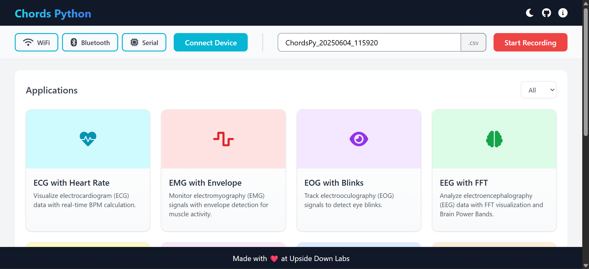
Interface in Light Mode#

Interface in Dark Mode#
B. Running Scripts Manually (Alternative)#
If you prefer running scripts directly (for development, debugging, or customization):
Download the Repository:
You can download the Chords-Python repository from GitHub by visiting the following link: Chords-Python.
Or, you can clone the repository using Git by running the following command:
git clone https://github.com/upsidedownlabs/Chords-Python.gitCreate and Activate a Virtual Environment (if not already):
On Windows:
python -m venv .venv.venv\Scripts\activateOn macOS/Linux:
python3 -m venv .venvsource .venv/bin/activate
Install Requirements:
pip install -r requirements.txtRun the Application:
Navigate to the chordspy folder and run:
python -m chordspy.app # To launch the web interface python -m chordspy.connection --protocol usb # To start LSL stream via USB python -m chordspy.connection --protocol ble # To start LSL stream via BLE python -m chordspy.connection --protocol wifi # To start LSL stream via WiFi
To run any application, open a new terminal:
python chordspy.gui.py # GUI Application python chordspy.ffteeg.py # EEG with FFT Analysis
Koneksi#
Langkah pertama adalah membuat koneksi dengan perangkat Anda dan memulai stream.
Ada tiga opsi koneksi yang tersedia:
Wi-Fi
Bluetooth
Serial (USB)
Wi-Fi#
Unggah firmware Wi-Fi melalui repositori
Chords-Arduino-FirmwareNyalakan perangkat dan hubungkan ke access point yang dibuat oleh perangkat (misalnya,
npg-lite-2)Di antarmuka web:
Klik tombol Wi-Fi
Klik tombol Connect
Notifikasi pop-up akan muncul yang menunjukkan koneksi berhasil.
Bluetooth#
Unggah firmware Bluetooth melalui repositori
Chords-Arduino-FirmwareNyalakan perangkat dan aktifkan Bluetooth di komputer Anda
Di antarmuka web:
Klik tombol Bluetooth
Pilih perangkat Anda dari daftar perangkat yang tersedia
Tekan tombol Connect
Notifikasi pop-up akan muncul yang menunjukkan koneksi berhasil.
Serial (USB)#
Unggah firmware Serial melalui repositori
Chords-Arduino-FirmwareHubungkan perangkat ke komputer Anda menggunakan kabel USB
Di antarmuka web:
Klik tombol Serial
Klik tombol Connect
Notifikasi pop-up akan muncul yang menunjukkan koneksi berhasil.
Note
Langkah koneksi penting karena memulai LSL Stream, yang diperlukan untuk menjalankan aplikasi.
CSV Logging#
Data mentah yang diterima dari perangkat dapat dicatat ke file CSV untuk analisis lebih lanjut atau penyimpanan. Fitur opsional ini dapat diaktifkan atau dinonaktifkan di antarmuka web.
Untuk menggunakan logging CSV:
Klik tombol Start recording untuk mulai mencatat - File dengan nama dibuat
ChordsPy_{timestamp}.csvdi folder yang sama. - File menyertakan kolom untuk counter dan data channelKlik tombol Stop recording untuk mengakhiri pencatatan - File akan disimpan di folder yang sama
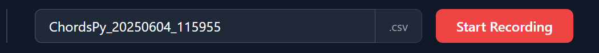
CSV Logging#
Aplikasi#
Ada banyak aplikasi yang tersedia yang streaming LSL dan dapat dijalankan untuk berbagai tujuan.
Daftar aplikasi yang tersedia:
1. ECG with Heart Rate#
Ringkasan#
ECG with Heart Rate adalah aplikasi real-time yang dirancang untuk memvisualisasikan dan menganalisis data Elektrokardiogram (ECG) menggunakan protokol Lab Streaming Layer (LSL). Dibangun dengan Python dan PyQt5, aplikasi ini menyediakan antarmuka grafis untuk memantau sinyal ECG, mendeteksi R-peaks (detak jantung), dan menghitung detak jantung secara real-time. Ini menerapkan teknik pemrosesan sinyal dan menggunakan pustaka neurokit2 untuk memperkirakan deteksi R-peak dan detak jantung.
Fitur#
Jendela GUI akan muncul, menampilkan sinyal ECG real-time bersama dengan detak jantung yang dihitung.
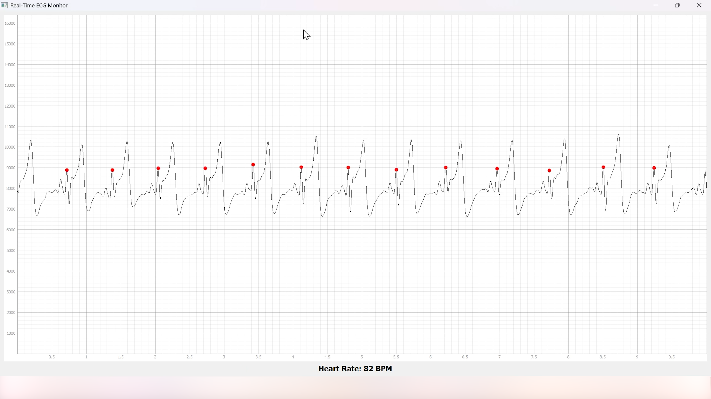
Heart Rate with ECG#
2. EMG with Envelope#
Ringkasan#
EMG with Envelope adalah aplikasi berbasis Python yang dirancang untuk memvisualisasikan dan menganalisis sinyal Elektromiografi (EMG) secara real-time. Ini terhubung ke stream data EMG menggunakan protokol Lab Streaming Layer (LSL), memproses sinyal untuk mengekstrak envelope EMG, dan menampilkan sinyal EMG yang difilter dan envelope-nya dalam antarmuka grafis yang ramah pengguna. Dibangun dengan PyQt5 dan pyqtgraph, aplikasi ini menyediakan alat visualisasi responsif dan interaktif untuk siswa, peneliti, atau pengembang yang bekerja dengan data EMG.
Fitur#
Jendela GUI akan muncul, menampilkan sinyal EMG real-time bersama dengan Envelope EMG yang dihitung.
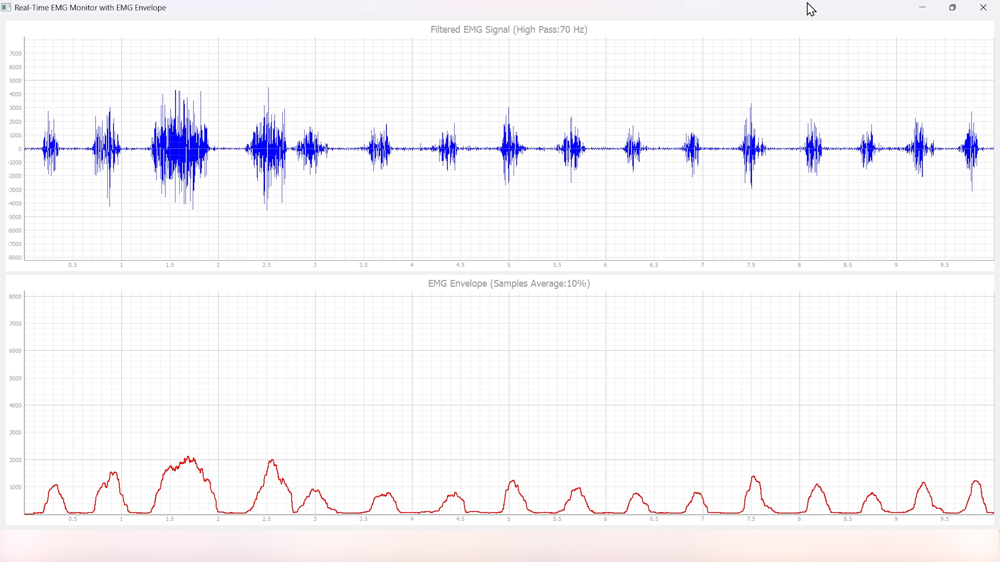
EMG with Envelope#
3. EOG with Blinks#
EOG with Blinks adalah aplikasi berbasis Python yang dirancang untuk memvisualisasikan dan mendeteksi kedipan mata secara real-time menggunakan sinyal Elektrookulografi (EOG). Dibangun dengan framework PyQt5 dan PyQtGraph untuk plotting, aplikasi ini terhubung ke stream LSL (Lab Streaming Layer) untuk memperoleh data EOG, memproses sinyal menggunakan filter low-pass, dan mendeteksi kedipan berdasarkan threshold dinamis. Aplikasi ini menyediakan antarmuka dual-plot untuk menampilkan sinyal EOG yang difilter dan kedipan yang terdeteksi, menjadikannya alat yang berguna untuk pemantauan dan analisis data EOG secara real-time.
Fitur#
Jendela GUI akan muncul, menampilkan sinyal EOG real-time bersama dengan Kedipan yang ditandai sebagai titik Merah.
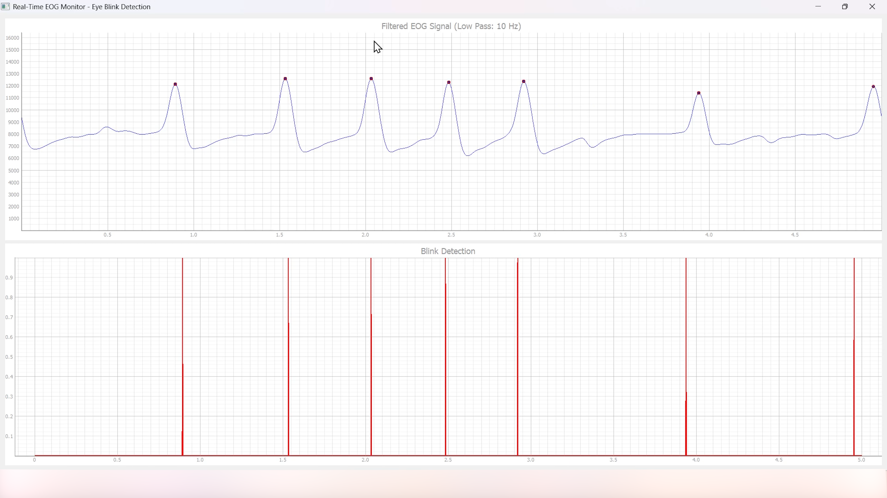
EOG with Blinks#
4. EEG with FFT#
Ringkasan#
EEG with FFT and Brainwave Power adalah aplikasi berbasis Python yang dirancang untuk memvisualisasikan dan menganalisis sinyal Elektroensefalografi (EEG) secara real-time. Ini terhubung ke stream data EEG menggunakan protokol Lab Streaming Layer (LSL), memproses sinyal untuk menghilangkan noise, dan melakukan Fast Fourier Transform (FFT) untuk menghitung daya dari berbagai band frekuensi gelombang otak (Delta, Theta, Alpha, Beta, dan Gamma). Aplikasi ini menyediakan antarmuka pengguna grafis (GUI) yang dibangun dengan PyQt5 dan pyqtgraph untuk visualisasi real-time sinyal EEG mentah, hasil FFT, dan distribusi daya gelombang otak.
Fitur#
Jendela GUI akan muncul, menampilkan sinyal EEG real-time bersama dengan FFT yang dihitung dan distribusi daya gelombang otak.
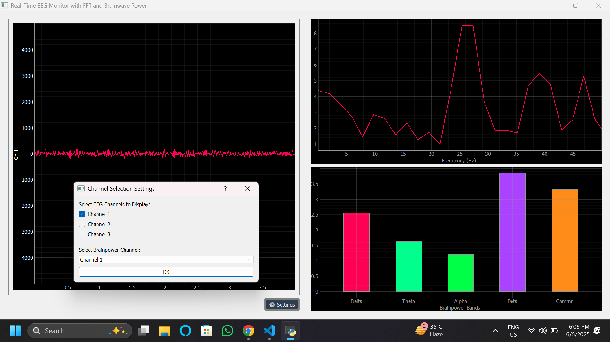
EEG with FFT#
Tip
Untuk memastikan Anda merekam sinyal berkualitas tinggi, lihat panduan detail di sini: Troubleshooting EEG Signal Quality.
5. EEG Tug of War Game#
Ringkasan#
EEG Tug of War Game adalah aplikasi berbasis Python yang memanfaatkan sinyal Elektroensefalografi (EEG) untuk membuat permainan interaktif dua pemain. Pemain mengontrol gerakan bola di layar dengan memodulasi aktivitas otak mereka, khususnya band frekuensi Alpha dan Beta. Permainan menggunakan protokol Lab Streaming Layer (LSL) untuk memperoleh data EEG real-time, memproses sinyal untuk menghitung daya relatif dalam band Alpha dan Beta, dan menerjemahkannya menjadi gaya yang menggerakkan bola. Pemain pertama bertujuan untuk mendorong bola ke sisi lawan untuk mencetak skor dan memenangkan permainan. Aplikasi dibangun menggunakan pustaka pygame untuk antarmuka grafis dan terintegrasi dengan pylsl untuk akuisisi data EEG.
Fitur#
Jendela permainan akan terbuka, menampilkan tombol untuk START/RESTART, PLAY/PAUSE, dan EXIT. Tombol-tombol ini menawarkan kontrol intuitif, memungkinkan pemain untuk dengan mudah memulai, menjeda, melanjutkan, atau keluar dari permainan sesuai kebutuhan.
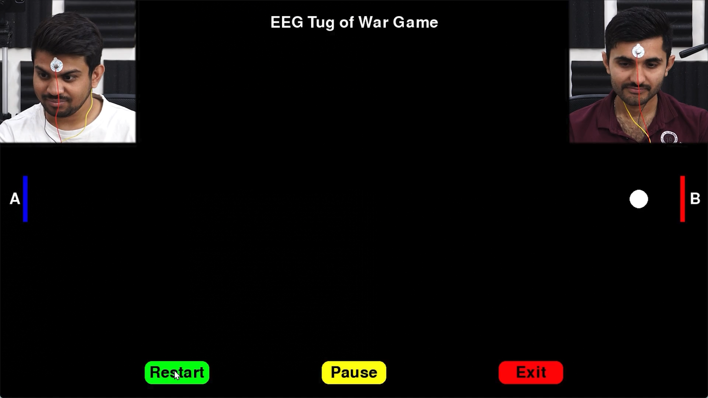
EEG Tug of War#
Untuk instruksi detail, lihat Instructable EEG Tug of War Game.
6. EEG Beetle Game#
Ringkasan#
EEG Beetle Game adalah aplikasi berbasis Python yang menggunakan sinyal Elektroensefalografi (EEG) untuk mengontrol gerakan kumbang dalam lingkungan permainan 2D. Permainan memanfaatkan protokol Lab Streaming Layer (LSL) untuk memperoleh data EEG real-time, memproses sinyal untuk mendeteksi tingkat fokus pengguna, dan menerjemahkannya menjadi gerakan ke atas atau ke bawah kumbang. Aplikasi dibangun menggunakan pustaka pygame untuk antarmuka permainan dan terintegrasi dengan teknik pemrosesan sinyal untuk menganalisis data EEG secara real-time.
Fitur#
Jendela GUI akan muncul, menampilkan semua pesan kalibrasi, diikuti dengan permainan dimulai, dan akhirnya menampilkan permainan dengan kumbang.
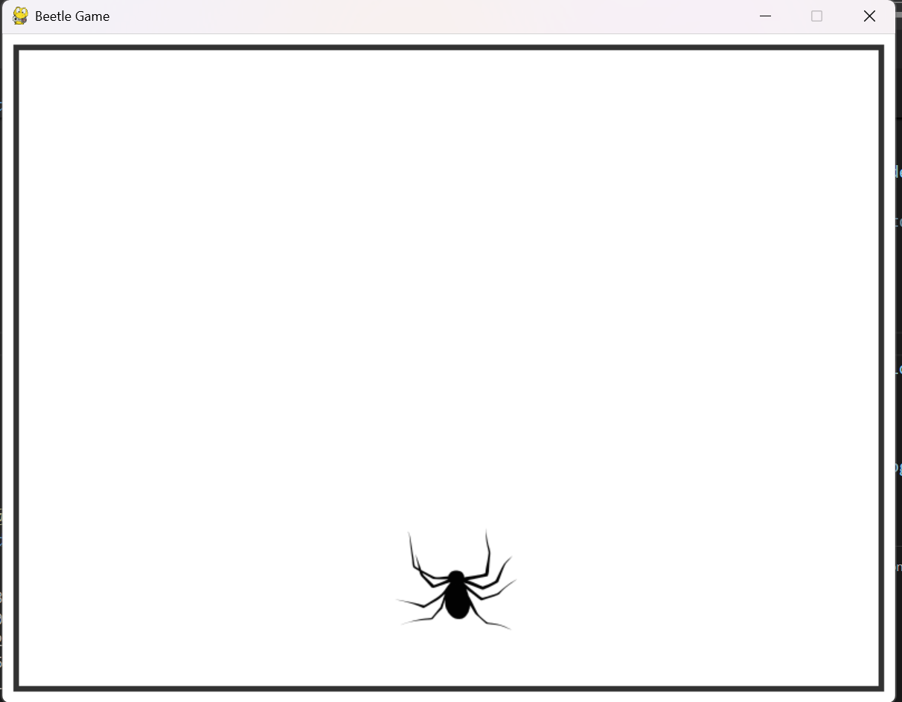
EEG Beetle Game#
7. GUI#
Ringkasan#
Aplikasi GUI adalah alat berbasis Python yang dirancang untuk memvisualisasikan stream data real-time dari perangkat Arduino menggunakan protokol Lab Streaming Layer (LSL). Aplikasi terhubung ke stream LSL, mengambil data multi-channel, dan memplotnya secara real-time menggunakan pustaka pyqtgraph.
Fitur#
Jendela GUI akan muncul yang menampilkan data secara real-time.
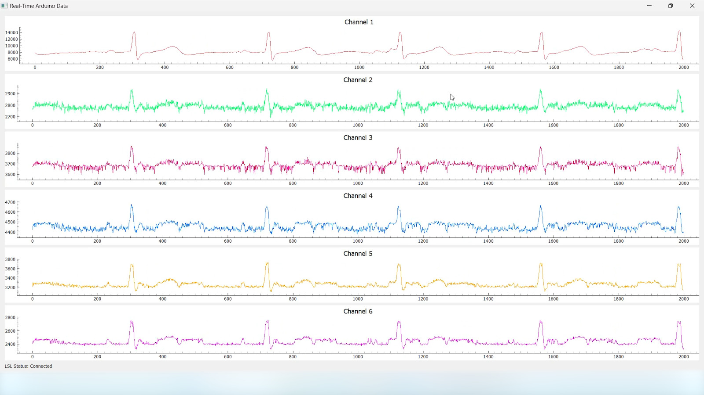
GUI#
8. EOG Keystroke Emulator#
Ringkasan#
EOG Keystroke Emulator adalah aplikasi berbasis Python yang dirancang untuk mendeteksi kedipan mata menggunakan sinyal Elektrookulografi (EOG) dan menerjemahkannya menjadi keystroke. Aplikasi memanfaatkan protokol Lab Streaming Layer (LSL) untuk memperoleh data EOG real-time, memproses sinyal untuk mendeteksi kedipan, dan mensimulasikan penekanan spacebar setiap kali kedipan terdeteksi. Aplikasi dibangun menggunakan pustaka tkinter untuk antarmuka pengguna grafis (GUI) dan terintegrasi dengan pyautogui untuk emulasi keystroke.
Fitur#
Jendela kecil muncul di sudut, menampilkan tombol Connect. Setelah terhubung, tombol Start menjadi terlihat. Menekan tombol Start memulai deteksi kedipan, dan setiap kedipan yang terdeteksi memicu penekanan tombol spacebar.
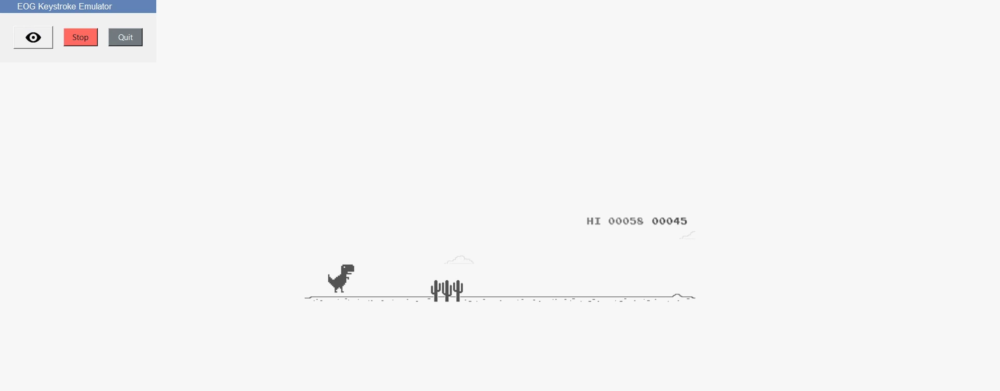
Keystroke Emulator#
9. CSV Plotter#
Ringkasan#
CSV Plotter adalah aplikasi berbasis Python yang dirancang untuk memvisualisasikan data dari file CSV. Dibangun menggunakan pustaka tkinter untuk antarmuka pengguna grafis (GUI) dan plotly untuk visualisasi data, alat ini memungkinkan pengguna untuk memuat file CSV, memilih channel data tertentu, dan menghasilkan plot garis interaktif.
Fitur#
Pop-up kecil akan muncul, menyediakan opsi untuk memuat file, memilih channel, dan memplot data.
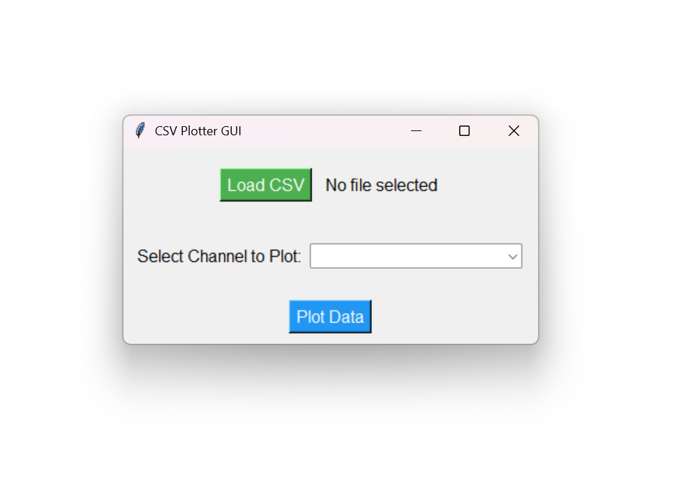
CSV Plotter#
10. EOG Morse Decoder#
Ringkasan#
EOG Morse Decoder adalah aplikasi berbasis Python yang memungkinkan pengguna untuk memasukkan kode Morse menggunakan gerakan mata yang terdeteksi melalui sinyal Elektrookulografi (EOG). Dengan menggerakkan mata ke kiri atau kanan, Anda dapat menghasilkan titik dan garis, dan dengan melakukan kedipan ganda atau triple, Anda dapat mengirim karakter atau backspace. Aplikasi ini ideal untuk komunikasi tanpa tangan dan penelitian aksesibilitas.
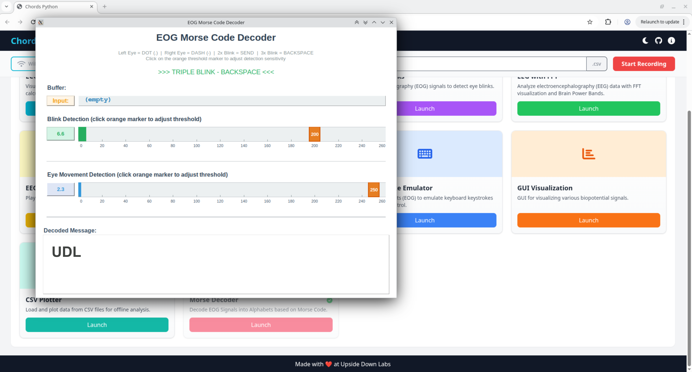
Morse Decoder#
Fitur#
Jendela GUI akan muncul yang memungkinkan Anda untuk memasukkan kode Morse menggunakan gerakan mata dan menampilkan teks yang didekode secara real-time.
Penempatan Elektroda#
Penempatan elektroda yang tepat sangat penting untuk deteksi sinyal EOG yang akurat. Tabel di bawah menunjukkan konfigurasi elektroda yang direkomendasikan:
Pin Elektroda |
Deskripsi |
Penempatan |
|---|---|---|
A0P |
Channel 1 Positif |
Di bawah mata |
A0N |
Channel 1 Negatif |
Di atas mata |
A1P |
Channel 2 Positif |
Di kiri mata kiri |
A1N |
Channel 2 Negatif |
Di kanan mata kanan |
REF |
Referensi |
Bagian tulang di belakang telinga |
Note
Channel 1 (A0P/A0N) mendeteksi gerakan mata vertikal untuk deteksi kedipan
Channel 2 (A1P/A1N) mendeteksi gerakan mata horizontal untuk deteksi kiri/kanan
Persiapan kulit dan kualitas kontak elektroda yang tepat sangat penting untuk performa optimal
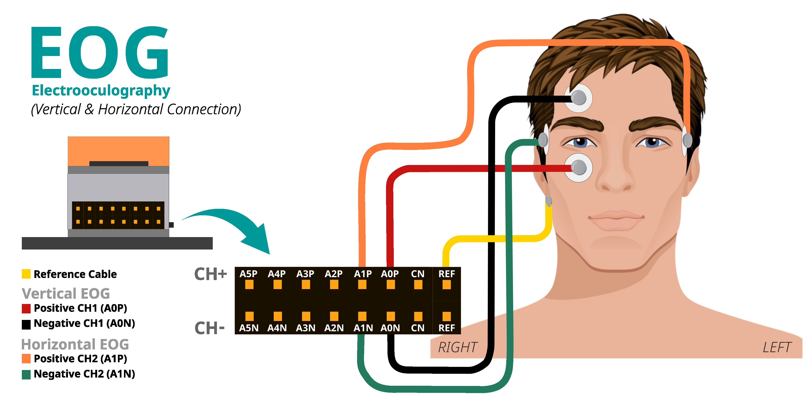
Electrode Placement Diagram#
Cara Kerja#
Akuisisi Sinyal: Aplikasi terhubung ke stream LSL dan terus membaca data EOG vertikal dan horizontal dari dua channel.
Filtering: Filter notch (50Hz), filter high-pass (1Hz), dan filter low-pass (10Hz) diterapkan untuk menghilangkan interferensi powerline dan mengisolasi frekuensi yang relevan.
Pelacakan Baseline: Baseline rolling dipertahankan untuk EOG horizontal untuk beradaptasi dengan karakteristik sinyal individu.
Deteksi Envelope: Envelope sinyal EOG vertikal dihitung untuk deteksi kedipan yang andal.
Deteksi Gerakan: Deviasi EOG horizontal dari baseline dianalisis untuk mengklasifikasikan gerakan mata kiri dan kanan.
Input Kode Morse:
Gerakan mata kiri → Titik (.)
Gerakan mata kanan → Garis (-)
Kedipan ganda → Mengirim urutan Morse saat ini sebagai huruf
Kedipan triple → Backspace (menghapus karakter terakhir)
Tampilan GUI: Visualisasi real-time menampilkan threshold deteksi, level sinyal, isi buffer, dan pesan yang didekode.
Menyesuaikan Deteksi untuk Sinyal Neural Anda#
Aplikasi ini menyediakan GUI intuitif untuk menyesuaikan sensitivitas deteksi secara real-time:
Penyesuaian Threshold Interaktif:
Threshold Deteksi Kedipan: Klik atau tarik marker orange pada batang deteksi kedipan untuk menyesuaikan threshold (rentang: 40-260). Nilai yang lebih tinggi memerlukan kedipan yang lebih kuat.
Threshold Gerakan Mata: Klik atau tarik marker orange pada batang gerakan mata untuk menyesuaikan threshold (rentang: 40-260). Nilai yang lebih tinggi memerlukan gerakan mata yang lebih besar.
Feedback Visual:
Batang deteksi kedipan menampilkan nilai envelope saat ini (hijau ketika di bawah threshold, merah ketika di atas)
Batang gerakan mata menampilkan deviasi dari baseline (biru ketika di bawah threshold, ungu untuk gerakan kiri, merah untuk gerakan kanan)
Marker threshold menampilkan nilai threshold saat ini dan dapat ditarik untuk penyesuaian
Parameter Timing (dapat disesuaikan dalam kode jika diperlukan):
BLINK_DEBOUNCE_MS(default: 200ms): Waktu minimum antara deteksi kedipan terpisahDOUBLE_BLINK_MS(default: 1000ms): Jendela waktu untuk deteksi kedipan gandaTRIPLE_BLINK_MS(default: 1500ms): Jendela waktu untuk deteksi kedipan tripleEYE_MOVEMENT_DEBOUNCE_MS(default: 750ms): Waktu minimum antara deteksi gerakan mata terpisah
Tips untuk Performa Optimal:
Pastikan NPG Lite terisi daya dan tidak terhubung ke laptop pengisi daya atau perangkat bertenaga AC
Duduk jauh dari peralatan bertenaga AC
Pastikan persiapan kulit dan kualitas kontak elektroda yang tepat. Baca Panduan Persiapan Kulit untuk instruksi detail.
Mulai dengan nilai threshold default dan sesuaikan menggunakan slider GUI berdasarkan kekuatan sinyal Anda
Pastikan penempatan elektroda yang tepat untuk sinyal EOG vertikal dan horizontal yang bersih
Pertahankan posisi pandang netral selama perhitungan baseline awal saat startup
Gunakan batang visualisasi real-time untuk memantau kualitas sinyal dan sesuaikan threshold sesuai
Pemecahan Masalah#
Jika gerakan tidak terdeteksi dengan andal, gunakan GUI untuk menyesuaikan threshold secara real-time dengan mengklik/menarik marker orange
Pastikan elektroda ditempatkan dengan benar: EOG vertikal di atas/di bawah satu mata, EOG horizontal di sudut luar kedua mata
Tetap rileks dan pertahankan posisi pandang netral selama perhitungan baseline awal
Periksa batang visualisasi real-time untuk memastikan sinyal terdeteksi dengan benar
Jika kedipan atau gerakan terlalu sensitif, tingkatkan threshold masing-masing menggunakan slider GUI
Jika kedipan atau gerakan tidak cukup sensitif, turunkan threshold menggunakan slider GUI
Buat Aplikasi Kustom#
Anda dapat membuat aplikasi kustom menggunakan framework yang disediakan dengan mengikuti langkah-langkah berikut:
Konfigurasi Metadata Aplikasi:
Edit file apps.yaml di folder config dengan detail aplikasi Anda:
- title: "Judul Aplikasi Anda"
icon: "path/to/your/icon.png"
color: "your_hex_color"
script: "path/to/{app_name}.py"
description: "Deskripsi singkat aplikasi Anda"
category: "Kategori Anda"
Tambahkan ini sebagai entri baru dalam daftar YAML. Ganti semua placeholder dengan detail aktual Anda.
Note
Path
iconharus relatif terhadap direktori root aplikasicolorharus dalam format HEX (mis., “#FF5733”)Path
scriptharus menunjuk ke file Python Anda
Buat skrip aplikasi:
Buat skrip Python baru di direktori utama dengan nama aplikasi Anda. Skrip harus berisi:
Penanganan koneksi stream LSL untuk menerima data perangkat
Komponen antarmuka pengguna menggunakan PyQt5/PyQtGraph
Logika pemrosesan data untuk sinyal yang masuk
Tip
Gunakan aplikasi yang ada di repositori sebagai implementasi referensi untuk: - setup lsl dan akuisisi data - Tata letak UI canggih - Contoh pemrosesan sinyal - Optimasi performa